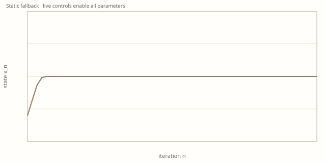
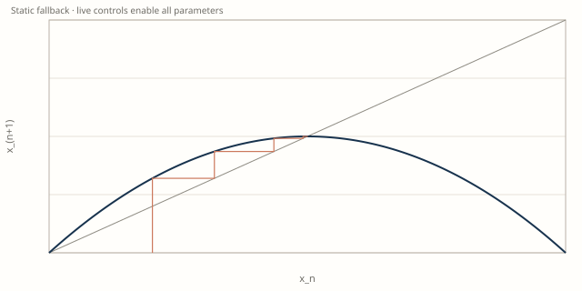
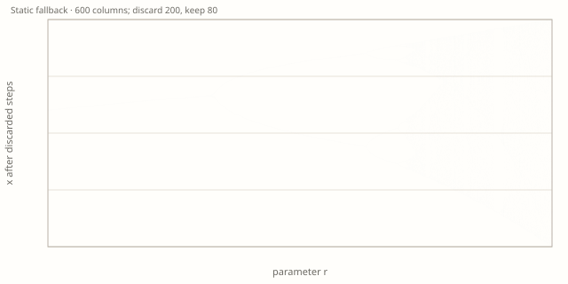

Lesson 1 · 50 minutes
Can AI help you understand chaos?
Compare two runs of the logistic map, then check your explanation with AI feedback and your own calculations.
Start at \(x_0=0.2\). Work out \(x_1\) and \(x_2\) for \(r=2\), then repeat for \(r=4\). Use your result for \(x_1\) to calculate \(x_2\). Predict what each sequence might do after many steps and give a reason for your guess.
Copy the prompt into your AI chat and fill in the brackets with your own work.
I am studying x(n+1)=r*x(n)*(1-x(n)), starting at x(0)=0.2. Here are my values of x(1) and x(2) for r=2 and r=4 [add your calculations]. My prediction and reason are [add your prediction and reason]. Check my arithmetic and ask me one question that I can test by hand or with a time-series graph. Wait for my attempt.
Name the exact point you do not understand
Choose one way to follow up. Save an AI claim that you can check later.
Here is the point I am stuck on. [Paste it here.] Explain it with a small numerical example, then ask me one question.
Show the same idea in an iteration table and a graph. Label both axes and the important points.
Ask me one question at a time about this point. Build on my answers. Let me attempt three rounds before giving an explanation.
Here is the claim I want to check. [Paste it here.] State its assumptions and decide whether it holds. If it is too strong, give a counterexample I can check.
Compare two pairs of nearby orbits
Keep \(x_0=0.2\) and try \(r=2\) and \(r=4\) in turn. Each run shows one orbit from \(x_0\) and one from \(x_0+10^{-6}\). Follow the curves, then use the table to compare the gap at steps \(0\) and \(30\) for each value of \(r\).
Time series · 60 steps

Show iteration values
| n | main \(x_n\) | twin \(x_n\) | separation |
|---|
Ask AI about my experiment
The prompt is generated from the current sliders.
Explore more parameters and diagrams
Cobweb · 30 steps
Follow the current orbit. Move vertically to the curve and horizontally to \(y=x\).

Bifurcation · click to choose \(r\)
Each of the 600 columns starts at \(x_0=0.2\), discards 200 steps, then plots 80.

Check and revise your explanation
Write a first draft in your own words. Include one claim from your AI chat, the settings and observations from both runs, and what your evidence supports about predictability.
View the prompt to send
- For the first round, paste the prompt into your AI chat. Read its checks and redo a key calculation yourself with the recurrence and a calculator. Keep the same settings and precision. If the result depends on a graph, check the matching row of the iteration table.
- For the second round, revise your answer above using what you checked. Copy and send it again. Repeat for any important claim that still needs work. If AI replies disagree, find the first step where they differ and check that step yourself.
How much can I trust the answer?
You can be most confident in claims you can reproduce or justify. Agreement across AI replies is an extra signal, and different chatbots can repeat the same error. For a fresh check, give a new chat or a second AI just the rule and the settings. Compare its calculation with yours.
An iteration table supports a claim about the chosen starts and steps. A claim about every orbit needs a mathematical argument. One counterexample can settle a claim that is too broad.
See two checks you can do by hand
For \(r=4\) and \(x_0=0.2\), check an AI answer for the first step by calculating \(x_1=4(0.2)(0.8)=0.64\).
Suppose AI says every orbit at \(r=4\) keeps fluctuating. Starting from \(x_0=0.5\) gives \(0.5\to1\to0\to0\). Since \(0\) maps to itself, this orbit is constant from step 2 onward. This single orbit gives a counterexample.
When you get stuck on a calculus exercise
Type the exercise in plain text
Use ordinary keyboard symbols and words. LaTeX is optional. Use parentheses to show what belongs together, and include the variable, any bounds and any conditions, such as x > 0.
- Use
(x+1)/(x-2)for a fraction andx^(3/2)for a fractional power. - Use
sqrt(x+2)for a square root andlimit as x approaches 0 of sin(x)/xfor a limit.
For the example below, type Evaluate the integral from x=0 to x=1 of x/(1+x^2) dx.
Ask AI to restate the exercise. Check that it read the signs, parentheses, bounds and conditions correctly before trying the hint.
Ask for one hint
Show the last step you can explain. If you have yet to write a step, say what the problem asks for and what you recognise in it.
Here is the full exercise and its conditions. [Type or paste the exercise.] Here is what I know or have tried. [Write one or two lines.] Here is where I need help. [Name the first step you are unsure about, or ask what to look at first.] Restate the exercise with its bounds and conditions. Ask me to clarify anything ambiguous. Then give me one hint or ask me one guiding question. Wait for my attempt before going further.
A complete hint request
Suppose you are evaluating \(\int_0^1 \frac{x}{1+x^2}\,dx\) and get stuck while making a substitution.
Evaluate the integral from x=0 to x=1 of x/(1+x^2) dx. I tried the substitution u = 1+x^2. Differentiating gives du = 2x dx. I'm unsure how to rewrite x dx in terms of du. Please restate the integral with its bounds, give me one hint about this step, and wait for my attempt.
Try the hint on paper. Send your next line if you still need help. After you finish, try a similar problem with the chat closed.
简体中文版
计算从 x=0 到 x=1 的定积分，被积函数是 x/(1+x^2)，积分变量是 x。 我试着令 u = 1+x^2。 微分后得到 du = 2x dx。 我卡在怎么用 du 表示 x dx。 请先复述积分和上下限，再给我一个关于这一步的提示，等我试过再继续。
繁體中文版
計算從 x=0 到 x=1 的定積分，被積函數是 x/(1+x^2)，積分變數是 x。 我試著令 u = 1+x^2。 微分後得到 du = 2x dx。 我卡在怎麼用 du 表示 x dx。 請先複述積分和上下限，再給我一個關於這一步的提示，等我試過再繼續。